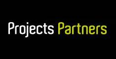
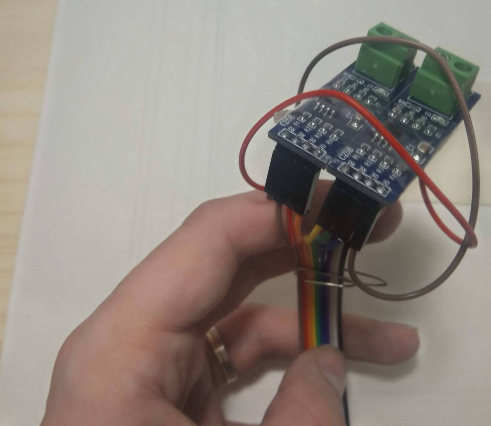
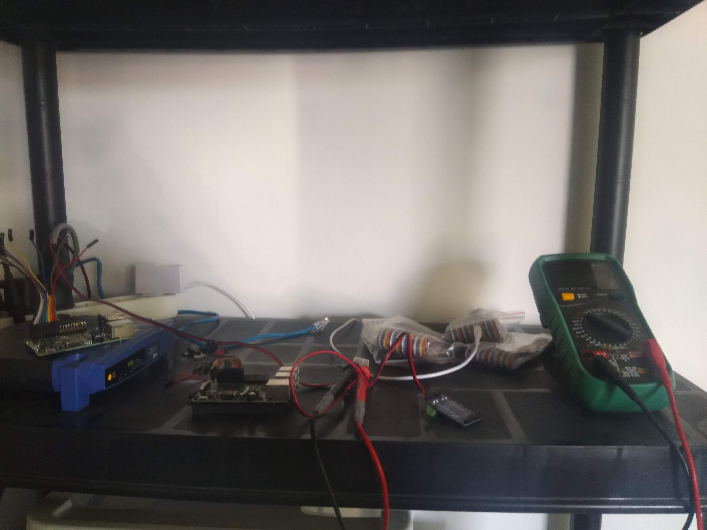
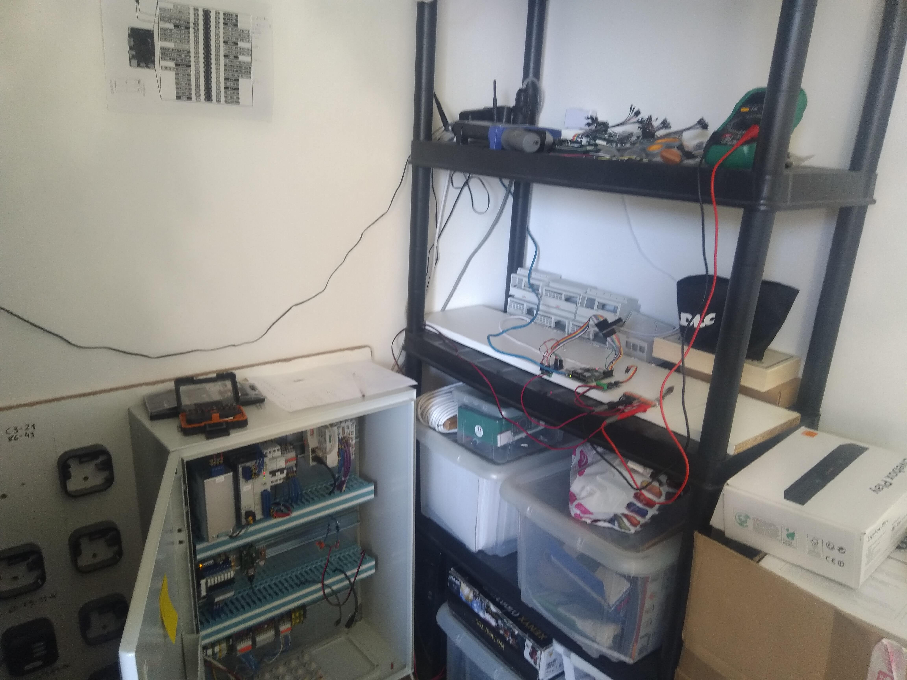
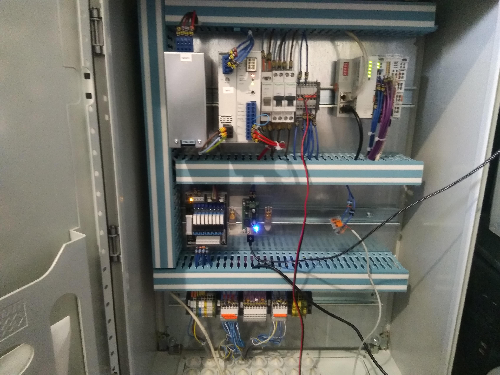
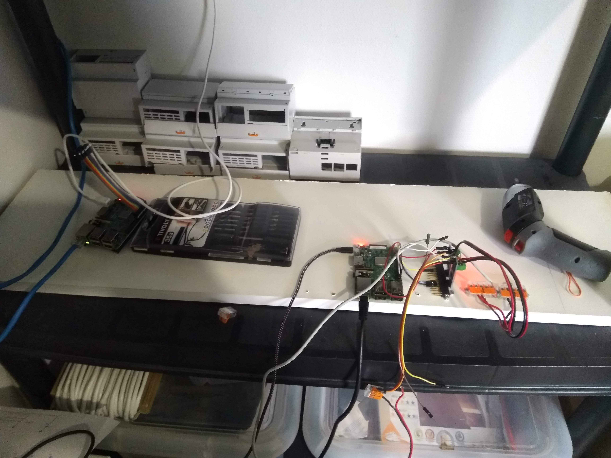
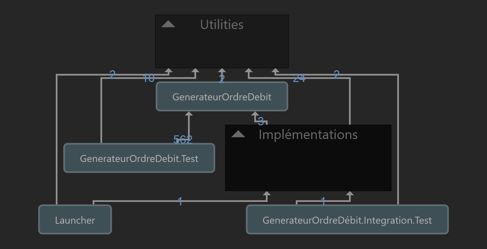

Cette page regroupe les projets que nous sommes fiers d'avoir réalisé. Tous sont indiqués, mais si vous êtes pressé, nous vous proposons une sélection parfaitement subjective.
Pour illustrer notre activité, nous avons choisi OxaControle notre plus vieux projet encore maintenu et installé, préexistant même à l'Atelier, le Pont SEPA-Chargebee réalisé pour SNAL/Albus et le refactoring stratégique du projet SIRH de Méritis, afin de représenter notre savoir-faire.
Cette liste va évoluer, elle est notre vitrine et sera mise à jour lorsque nous aurons achevé de nouveaux projets.
Reprise d’une application PHP/Laravel obsolète et délaissée depuis plusieurs années, de gestion de campagnes de dons pour des associations. Duplication du projet, assainissement du code et correction à chaud de bugs bloquants. Stratégies de contournement des problèmes les plus coûteux à résoudre.
Actuellement : Recueil du besoin, conseil et étude sur la transition d’un CRM obsolète vers une solution plus récente. Développement de connecteurs entre applications.
Reprise d’un projet de contrôle d’accès datant de 2013, réalisé avec Projects Partners en alternance. Maintenance des sites installés précédemment. Installation de nouveaux chantiers.
Changement d’échelle (x10), problématiques de sécurité, de performance, de maintenabilité, de qualité du code. Refonte applicative complète après auto-audit, notamment de l’UI WPF. Ajout de tests (unitaires, fonctionnels, d’intrusion, de performances, etc.). Refactoring et application des bonnes pratiques. Conversion à .NET 6.
Actuellement : En production sur 5 sites allant du petit bureau au grand centre aquatique. Étude de nouveaux chantiers.
L'histoire commence en 2013, en alternance chez Projects Partners, dirigée par Thierry et Rémi Balu. L'entreprise produit des logiciels à destination du BTP : Convertisseurs, applications mobiles et développements plus particuliers. Ce qui allait ensuite s'appeler OxaControle est né d'une demande de l'électricien Laurent Frapier. Il venait de remporter un marché d'électricité et de contrôle d'accès par badge. La première partie est son métier, pas la seconde. Le projet a donc été confié à Projects Partners.

L'équipe de Projects Partners était réduite, votre serviteur comme développeur en alternance et M. Balu, à la direction. Le projet était d'envergure : proposer une solution de contrôle d'accès complète et peu coûteuse, allant de l'interface de paramétrage à l'interrogation en RS485 des lecteurs.
La plateforme Raspberry Pi a été sélectionnée pour son faible coût et sa puissance suffisante pour diriger une poignée de lecteurs, autant de portes et une flotte de quelques badges. Le principal défi vint de la plateforme .NET, alors absente de Linux. .NET Core n'arrivera que quelques années plus tard. C'était alors Mono qui remplissait le rôle, avec un transpilage en Java très gourmand en ressources.
Le Raspberry est incapable de produire des signaux RS485 sans convertisseur adapté. Le tâtonnement a été long pour aboutir à une solution à base de convertisseurs TTL to RS485, branchés de manière exotique afin d'utiliser le bus en full-duplex. Ces deux éléments sont encore utilisés aujourd'hui sur le projet, garants de son faible coût.

Le projet a été déployé sur plusieurs petits sites. Il y fonctionne depuis plusieurs années sans nécessiter d'autres interventions que celles d'un électricien pour remplacer certaines pièces d'usure. Je n'ai été amené à intervenir qu'une seule fois sur ces sites depuis leur installation.
En 2019, Laurent Frapier nous contacte afin de proposer à l'Atelier la reprise d'OxaControle et son développement. L'objectif est ambitieux : multiplier par 20 le nombre de portes, badges et lecteurs que l'application peut supporter. Deux défis se présentent à nous : la mise à l'échelle, dépassant de très loin les capacités des Raspberry Pi, et la reprise d'un code immature, réalisé bien avant d'avoir acquis l'expérience et les connaissances nécessaires pour produire la qualité dont nous sommes capables aujourd'hui.
Pour résumer, nous devions passer à une échelle inédite un code d'étudiant fortement endetté.
En partie par défi et en partie par orgueil, nous avons accepté.
Une année d'études et de remaniement du code ont été nécessaires afin de retrouver une qualité suffisante pour avancer sereinement. Refactoring, refonte de certaines parties, introduction de tests, changement de technologie, nouvelle architecture matérielle. Presque tout à évolué pour fiabiliser le projet. Covid aidant, notre premier bureau s'est transformé en laboratoire d'électronique improvisé.




Une fois la solution au point vint le temps de l'installation sur site, terminée à l'heure où j'écris ces lignes. Le défi est achevé, désormais OxaControle peut s'adapter à toutes les tailles de bâtiment grâce à son architecture évolutive.
Le projet, désormais repris doit maintenant être consolidé et assaini, afin de s'attaquer à d'autres sites. Il reste trop d'étapes manuelles lors de l'installation et de la maintenance et le poids du code legacy, bien que fortement réduit par des tests adaptés, reste fort dans le projet.
Désormais installé sur un site d'envergure (80 lecteurs, 200+ badges), OxaControle devrait susciter l'intérêt d'autres maîtres d'oeuvre, nous serons là pour le faire vivre et évoluer, 8 ans après.
Formation d’étudiants niveau Bac+3/4 en vue du titre Niveau 7 « Expert en informatique et systèmes d’information » en présentiel majoritaire. Entre 10h et 80h par module.
Pédagogie orientée pratique (4/5 du temps en atelier). Coding dojos, cas réels, exercices. Positionnement exploratoire : pratiques validées par la science, mais pas toujours répandues en entreprise.
Suivi technique pour la rédaction des mémoires de fin d’études. Participation aux jurys.
Actuellement : Suivi de mémoires, corrections et planification de l'année prochaine.
Module de 3 jours destiné à des ingénieurs de formation. J'ai appris Python en amont afin d'être au plus près des stagiaires. La formation devait être initialement en C++, non-maîtrisé par tous.
La formation, loin d'être un package normatif rigide, est une initiation à la philosophie derrière Clean Code : nous n'écrivons pas des programmes pour des machines, mais bien pour les humains qui vont devoir les relire et les maintenir. Elle est donc plutôt agnostique en matière de langages.
Selon les besoins des stagiaires, des capsules sont mises en place afin de corriger les mauvaises pratiques, toujours par la pratique et l'explication des principes cognitifs sous-jacents. Faire du bon code est avant tout une affaire de psychologie appliquée.
Module de 80h destiné à des M1&M2 en développement. Ont été abordés à l'aide de 6 exercices :
Audit, développement et refactoring stratégique d’une API de gestion des données RH sous ASP.NET Core. Mise en place de pratiques de développement et d’outillage CI. Réduction de la dette en parallèle d’échéances de livraison.
Mission moyenne durée pour remettre le projet sur les rails.
Mission suivie d'une prestation de développement d'un outil de gestion des logs en TDD.
Développement au forfait d’un automate de traitement des débits et rejets entre le logiciel de facturation Chargebee et le format XML SEPA DirectDebit.
L'intérêt de ce projet, somme toute assez routinier, est d'être une démonstration achevée des bonnes pratiques que nous prêchons. Le besoin ne présente aucune difficulté particulière : il s'agit d'un pont très classique entre un logiciel de facturation (Chargebee) et le format d'échange interbancaire SEPA. Le pont fonctionne dans les deux sens : émission des ordres de débit et lecture des rejets.
Quelques détails sont inconnus au début du projet, certaines dépendances obligatoires sont intestables ou peu sûres, des couches anticorruption ont du être mises en place afin de rendre l'intestable plus prédictible et le peu sûr facilement remplaçable. Les détails d'implémentation dépendent du métier et non l'inverse (DI) et chaque composant, en plus d'être testé individuellement (tests fonctionnels), est mis en mouvement dans un tout plus grand (tests système), avant d'être relié au monde extérieur pour les tests les plus aboutis (tests d'intégration).

Le projet est réalisé en C# avec une architecture hexagonale, tout juste maîtrisée par l'Atelier. Cette architecture offre une grande surface d'accroche à d'autres bonnes pratiques, comme TDD, DDD, l'utilisation d'un framework d'IoC ou l'usage de tests de recette pour les démonstrations. La conjonction de ces techniques représente le sommet de la qualité dont l'Atelier est capable à ce jour. Cela ne signifie pas que ces pratiques seront utilisées sur vos projets, chacune ayant un cadre d'usage précis, mais il s'agit aujourd'hui de notre état de l'art.
Nous nous attendons à ce que ce projet soit détrôné par un autre, nos connaissances progressant sans cesse.
Développement C#/.NET en contexte industriel et domotique au sein d'une équipe de 12 (développeurs et testeurs).
Audit des performances d’une application. Approche orientée code : profilage, tests unitaires puis réalisation de POC présentant les améliorations possibles de l’existant.
Spotlights est un journal innovant, participatif et géolocalisé qui s’adapte à l’usage du lecteur. Son fonctionnement est transparent et décentralisé grâce à l’usage de la blockchain.
J’ai réalisé l’intégralité du code en binôme avec un développeur junior. C#/ .NET fullstack. Blockchain et Event Sourcing sur toute la partie Data. CI/CD handmade (scripts Bash).
Spotlights est un média participatif décentalisé. Pour en savoir plus sur le projet (qui est en sommeil faute d'investisseurs), le site est toujours en ligne.
C'est autour d'une bande d'amis qu'a démarré le projet Spotlights en Mai 2018. De fil en aiguille, l'Atelier a été associé au projet et chargé d'en superviser le développement. Le projet était à la pointe des technologies du moment : blockchain, smart-maps, .NET Core. Le code était envisagé comme un squelette (ou tracer bullet en anglais), à savoir un code prévu pour avancer dans un environnement fonctionnel changeant ou incertain, permettant de lever itérativement les voiles de brouillard.
Le projet n'a pas trouvé son financement, le développement n'est pas arrivé à son terme, mais la méthode de développement utilisée a permis d'obtenir un code assez indépendant du monde extérieur, vieillissant très peu. La logique métier est découplée de l'infrastructure grâce à la Clean Architecture. Ainsi le projet peut rester en sommeil sans s'abîmer et ressortir un beau jour si des investisseurs se présentent.
Les principes du Clean Code, de DDD et TDD garantissent qu'un développeur reprennant le code pourra facilement se l'approprier, sans avoir besoin d'effectuer une obscure et coûteuse rétro-ingénierie.
Si Spotlights reprenait demain, l'Atelier serait bien évidemment de la partie.